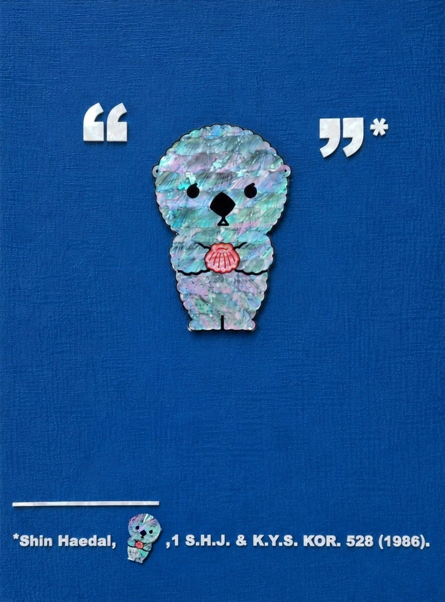

더 블루북The Bluebook
The Bluebook더 블루북
목심저피나전칠기(천연자개, 옻칠, 삼베 등) · A1 (59.4 × 84.1) cm · 2026Najeonchilgi (Mother-of-pearl, Lacquer, Hemp cloth, etc.) · A1 (59.4 × 84.1) cm · 2026
블루북은 미국 로스쿨생의 악몽이자 필수도서다. 법률 문헌의 인용 형식을 규정하는 규칙집으로, 쉼표 하나와 마침표 하나까지도 엄격하게 요구한다. 작가는 블루북의 규칙을 차용해 얼빵해달을 인용하며 작품을 쓴다. 화면의 각주는 작가 자신에게서 발췌한 문장들이다. 가장 사적인 이야기가 가장 엄격한 형식으로 인용된다.The Bluebook is both the law student's nightmare and their bible — a citation manual so exacting it governs even where a comma or a period must fall. Here, the artist borrows its rules to cite Spaced-out Sea Otter, writing the work the way a legal brief would. The footnotes running across the piece are lines lifted from the artist's own life. The most private story, cited in the strictest possible form.
전시 이력Exhibitions
- [예정] 2026.11.23 – 2026.11.29 나전칠기로 아트하는 法, 갤러리 비브, 서울, 대한민국[Upcoming] 2026.11.23 – 2026.11.29 Art by Law, in Najeonchilgi, Gallery VIV, Seoul, KR
- 2026.06.26 – 2026.06.29 CODE NAME: BLUE, 레온갤러리, 서울, 대한민국2026.06.26 – 2026.06.29 CODE NAME: BLUE, Leon Gallery, Seoul, KR